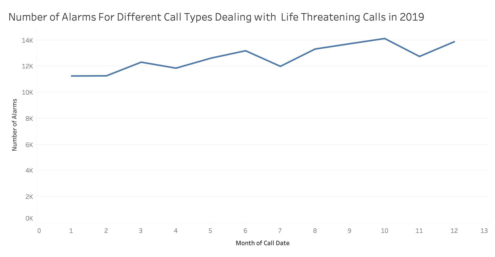
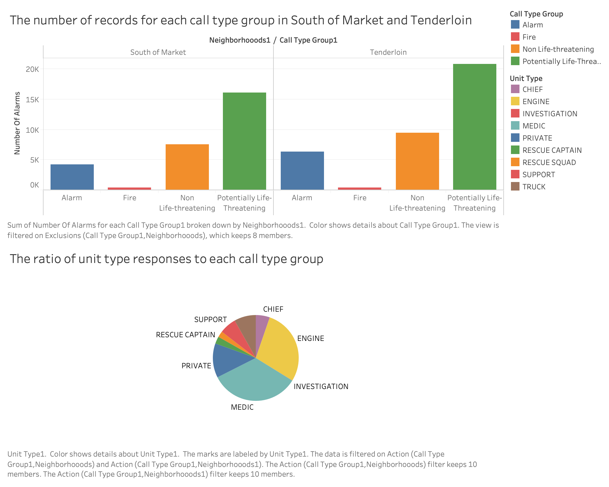
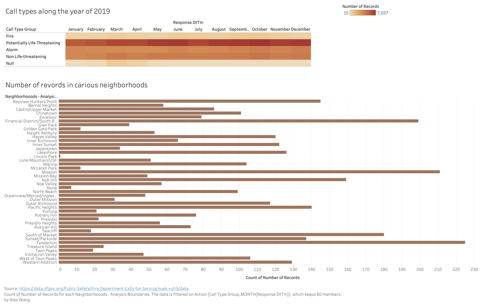

Page Overview
Introduction - overall narrative
Our theme is to know more about the work of superheroes in our real life - SFFD.
In general, we might have some impression of what firefighters do, but what about some facts and details that we don't really know?
What different kinds of work do they do everyday to help people? When is the busiest season for their work? In range of San Francisco, how are the incidents distributed in neighborhoods? Which unit do SFFD dispatch to the scene?
These intriguing questions are awaiting, and we are going to figure out in our data visualizations.
Dataset
The dataset contains bunch of record is related to fire Calls-For-Service includes all fire units responses to calls. Each record includes the call number, incident number, address, unit identifier, call type, and disposition.
https://data.sfgov.org/Public-Safety/Fire-Department-Calls-for-Service/nuek-vuh3
Relevant columns:
Call Number - A unique 9-digit number assigned by the 911 Dispatch Center (DEM) to this call. These number are used for both Police and Fire calls.
Incident Number - A unique 8-digit number assigned by DEM to this Fire incident.
Call Type - call type
Call date - Date the call is received at the 911 Dispatch Center. Used for reporting purposes.
Unit Type - Unit type
Number of Alarms - Number of alarms associated with the incident. This is a number between 1 and 5.
Neighborhooods - Analysis Boundaries - Neighborhood District associated with this address
Wrangling
All the data warngling for prototypes are in the website user interface: within range of 2019, and only the columns needed for prototypes are kept as groups.
Navigation
The top memu has home button and a navbar with list of button which each could navigate to different chart to demostrate our idea and thought
Trending Line Chart Prototype
Steven Rokkala

More Information
Bar + Pie chart Graph Prototype
Paul Ke

More Information
Heatmap + Bar Graph Prototype
Alex Wang

More Information
About Us
Steven Rokkala
CS Major, University of San Francisco
Expected Graduation: May 2020
srokkala@dons.usfca.edu
Hello everyone, my name is Steven Rokkala and I love Java and Javascript because of how versatile they are. In my free time, I like to watch and play sports.
Skills
Python
C
Java
JavaScript
HTML
CSS
SVG
SQL
ARM Assembly
Alex Wang
CS Major,
University of San Francisco
Expected Graduation: December 2020
zwang114@dons.usfca.edu
Interested in Data visualization, Brain-Computer Interaction, Game development, and more. Dedicated to using technology to bring more convenience, safety and peace to the world. A Slytherin.
Skills
Python
C
Java
ARM Assembly
R
JavaScript
HTML
CSS
SVG
Paul Ke
CS Major,
University of San Francisco
Expected Graduation: May 2020
yke7@dons.usfca.edu
To prepare for my career, I am pursuing my education degree from the University Of San Francisco and majoring in Computer Science and Marketing. I know theoretical applications and have individual ability to help develop new technology to solve many of the problems associated with the computer industry. For example, I have been completed a search engine project in using the Java program language.I also have an internship as a software engineer. During this internship, I learned how to use react framework and use JavaScript to solve web applcations problems.
Skills
Python
C
Java
Tableau
JavaScript
HTML
CSS
SVG
Responsibilities
Each of teammates built a prototype, Steven proofreaded the dataset issue, Paul reorganized each teammate's own web page for structure of the group's website, Alex did dataset analysing and theme choosing.